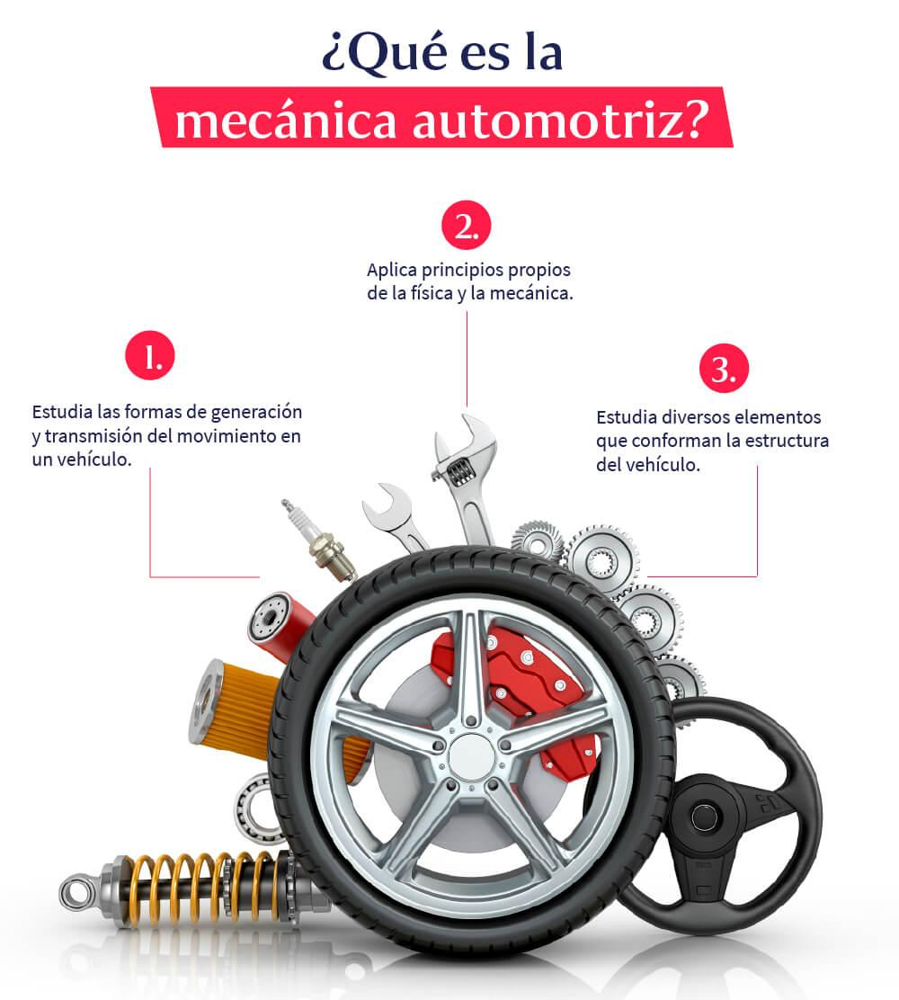

Qué es la mecánica automotriz
La mecánica automotriz es una de las ramas de la mecánica que se encarga de estudiar las formas de generación y transmisión del movimiento de un vehículo. Para lograr este propósito aplica los principios propios de la física y la mecánica para optimizar el proceso de movimiento en todo vehículo motorizado. Este movimiento o movimientos se generan gracias al diseño de una diversidad de autopartes que conforman la estructura del vehículo. Por ello, la mecánica automotriz no se concentra en un único componente sino que abarca una diversidad de elementos que funcionan como uno mismo.
Historia de la mecánica automotriz
Aunque no existe una fecha exacta para determinar el origen de la mecánica automotriz, es cierto que sus principios se han abordado desde tiempos inmemoriales a través de la historia. Primeramente, en la antigua Grecia, el trabajo de Arquímedes sentó las bases para el desarrollo de la mecánica occidental y su posterior difusión a otras partes del mundo. Sin embargo, fue Herón de Alejandría, uno de los ingenieros y matemáticos más importantes de la historia, el responsable de dictaminar las primeras reglas de la mecánica automotriz al crear la primera máquina de vapor. Posteriormente, el ingeniero chino Ma Jung inventó un carro con diferencial de engranajes usando los anteriores aportes.
Elementos que estudia la mecánica automotriz
Además de estudiar el proceso para la transmisión y generación del movimiento dentro de un vehículo motorizado, la mecánica automotriz se encarga también de analizar los componentes involucrados en este desarrollo. Y es que cuando hablamos de mecánica automotriz no solo nos referimos al estudio del motor, el corazón y protagonista de todo vehículo, también hablamos de una serie de componentes que sin ellos, no podría funcionar un coche. Vuélvete un profesional en este campo con nuestro Curso de Mecánica Automotriz. Regístrate y empieza a emprender.
Motor
No puede existir vehículo motorizado sin la presencia de un motor. Este elemento es el encargado de hacer funcionar el sistema completo de una unidad gracias a la transformación de algún tipo de energía, electricidad, combustibles, entre otros, en energía mecánica. Es en pocas palabras, el responsable de producir todo el movimiento.
Árbol de levas
Recibe su nombre por su estructura formada por un eje y una diversidad de levas que tienen como función activar diversos mecanismos como las válvulas. En motores de combustión interna, buscan facilitar la salida e ingreso de los gases en los diversos cilindros del vehículo.
Cigüeñal
Es la parte más grande y pesada del motor de un auto que sirve para convertir el movimiento alternativo de un pistón en un movimiento giratorio. A través de su eje giratorio busca crear una sucesión de movimientos que finalicen con el desplazamiento del vehículo.
Correa de distribución
Es el medio por el cual se sincroniza la rotación del cigüeñal y el árbol de levas. Su objetivo principal es permitir el cierre y apertura de las válvulas del motor durante el proceso de admisión y escape de cada cilindro. Es una pieza que debe sustituirse con el tiempo debido al desgaste.
Importancia de la mecánica automotriz
En términos sencillos y generales, se podría colocar a la mecánica automotriz como la disciplina encargada de reparar imperfecciones en el motor de un vehículo. Pero lo cierto es que esta rama de la mecánica va mucho más allá de una simple corrección. Se puede aplicar en la manutención y optimización de una amplia variedad de motores.
De igual manera, tiene un importante papel al momento de evaluar y poner en acción la diversidad de avances tecnológicos. La mecánica automotriz destaca también por su capacidad de prevención, ya que además de reparar todo tipo de mecanismos orientados al movimiento de un coche, es capaz de detectar toda carencia de mantenimiento y falla.
Qué hace un mecánico automotriz
Un profesional de la mecánica automotriz no solo se encarga de hacer las reparaciones correspondientes a uno o más elementos involucrados en la generación de movimiento de un coche, también aplica sus conocimientos y habilidades en otro tipo de funciones igual de importantes que la primera.
■ Elaborar un presupuesto que cubra las reparaciones y el trabajo aplicado.
■ Realizar el diagnóstico del estado del vehículo.
■ Desmontar las partes del motor y otros elementos para su reparación.
■ Reemplazar las partes dañadas de forma óptima y segura.
■ Ensamblar el motor y otras partes para realizar pruebas.
■ Orientar al cliente respecto al correcto funcionamiento del vehículo.